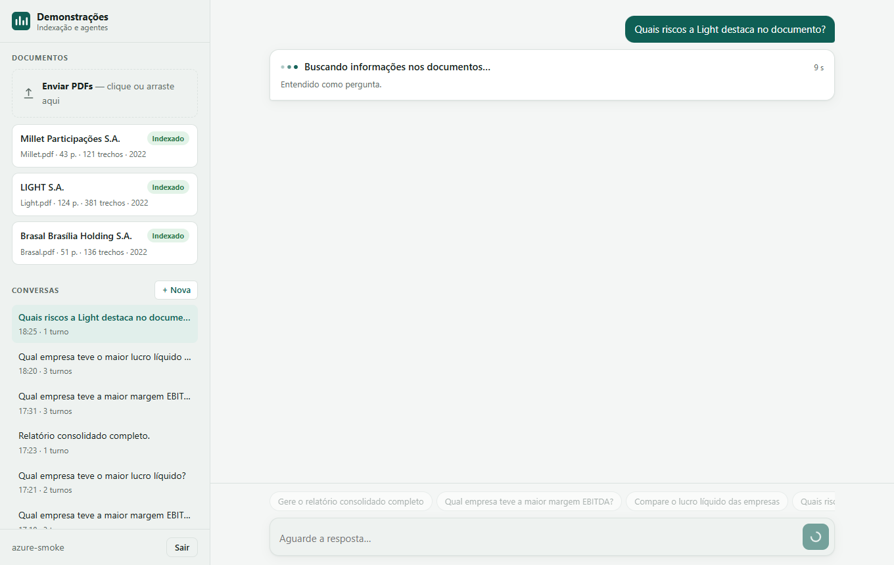
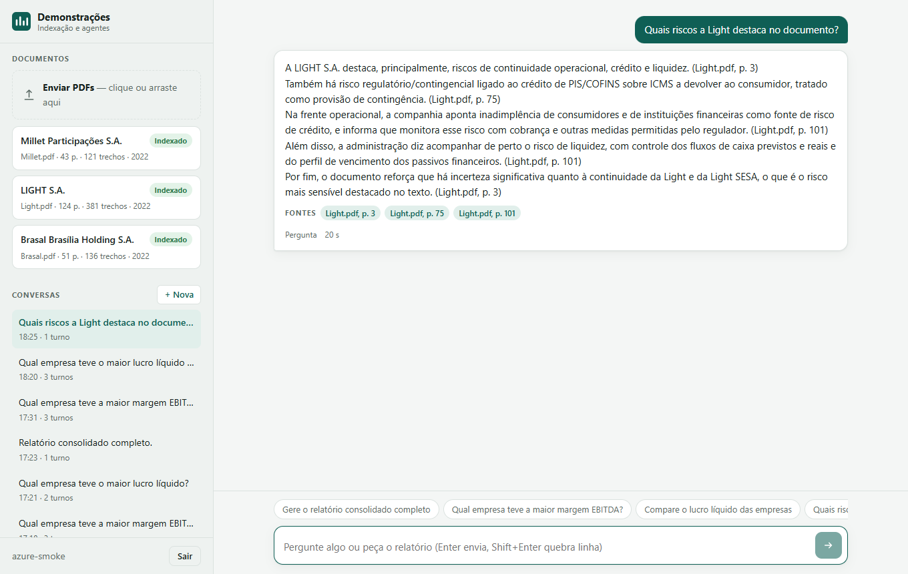
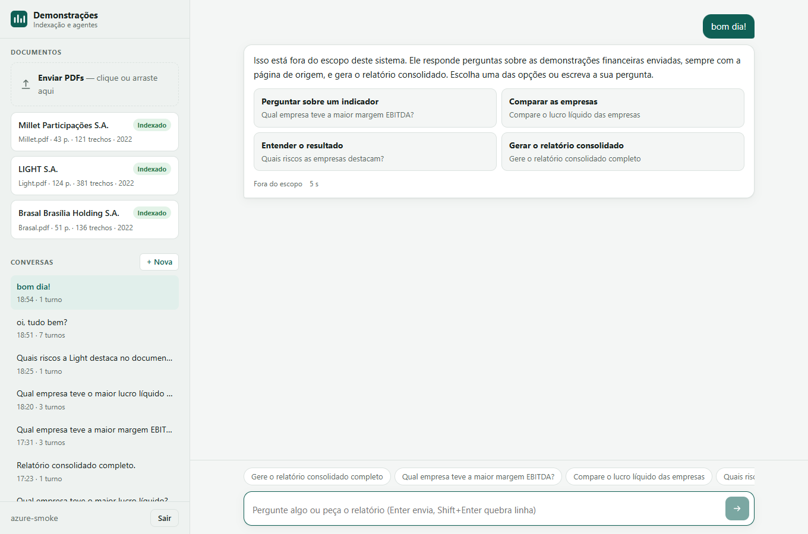
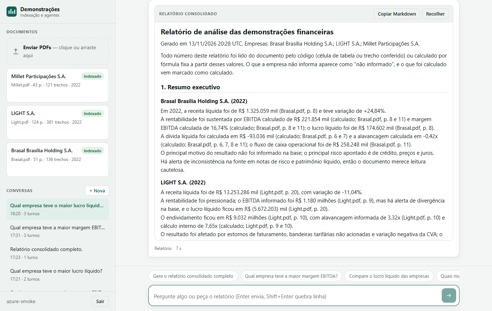

Sistema 4 · frontend/
Frontend
A tela do usuário, em SvelteKit: envio dos PDFs com o progresso da indexação, e o chat com os agentes, bloqueado até a resposta e mostrando o que o sistema está fazendo.
Login e proxy
Qualquer outro caminho responde 404, e método errado, 405. Busca direta, mensagens completas dos agentes e rotas administrativas ficam de fora.
| Sistema | O proxy repassa |
|---|---|
| indexador | GET/POST /api/documents, GET/DELETE /api/documents/{id}, GET /api/documents/{id}/jobs, GET /api/jobs/{id} |
| orquestrador | GET/POST /api/conversas, GET /api/conversas/{id}, POST /api/conversas/{id}/mensagens, GET /api/execucoes/{id} |
O chat
De onde vem o “pensando…”
O aviso não é uma animação de enfeite: é o que o sistema está fazendo, lido dos passos da execução. Quem está trabalhando sai dos pares delegando (começou) e especialista (terminou).
| Passo mais recente do trace | Aviso na tela |
|---|---|
| nenhum ainda | Carregando… |
inicio, especialistas, conversa | Entendendo o pedido… |
orquestrador, raciocinio, tool do orquestrador | Pensando… |
delegando pesquisador | Buscando informações nos documentos… |
delegando extrator / validador / analista em X | Lendo os números de X… / Conferindo as fontes de X… / Analisando o texto de X… |
delegando redator | Escrevendo… |
vários delegando sem especialista | N especialistas trabalhando ao mesmo tempo… (e a lista) |
conferencia | Conferindo se está tudo pronto… |
| 8 s sem passo novo e ninguém trabalhando | alterna: Pensando… / Buscando informações… / Carregando… |
A resposta
- Pergunta: o texto em Markdown e as fontes como selos (documento e página).
- Relatório: o Markdown com tabelas, recolhível, com botão para copiar.
- Fora do escopo: o texto fixo e as opções; clicar manda o exemplo.
- Incompleto ou falhou: o motivo, escrito pelo código. A mensagem livre do orquestrador nunca aparece como resposta.
- Todo Markdown que vem dos agentes passa pelo DOMPurify antes de ir para a tela.




Documentos
Mapa do código
config/ajustes.yaml atalhos do chat, intervalo do andamento, margem da sessão
src/
├─ hooks.server.ts confere a sessão em todo pedido
├─ instrumentation.server.ts OpenTelemetry
│
├─ routes/ AS PÁGINAS E AS ROTAS DO SERVIDOR
│ ├─ +page.svelte a tela principal: lateral + chat
│ ├─ +page.server.ts usuário e ajustes para a tela
│ ├─ login/ entrar e criar conta (form actions, cookie httpOnly)
│ ├─ sair/ encerrar a sessão
│ └─ api/[sistema]/[...rota]/ o proxy para o indexador e o orquestrador
│
└─ lib/
├─ componentes/
│ ├─ chat/ Chat (caixa, envio, acompanhamento), Turno (pergunta e resposta),
│ │ Andamento ("pensando…"), Markdown (limpo pelo DOMPurify)
│ └─ lateral/ Documentos (envio e progresso), Conversas
├─ server/ SÓ NO SERVIDOR: sessao, rotas (lista do proxy), config, ajustes
├─ api.ts chamadas do navegador ao próprio frontend
├─ progresso.ts passos da execução → aviso de andamento
├─ markdown.ts Markdown → HTML seguro
└─ tipos.ts os tipos das respostas das APIs